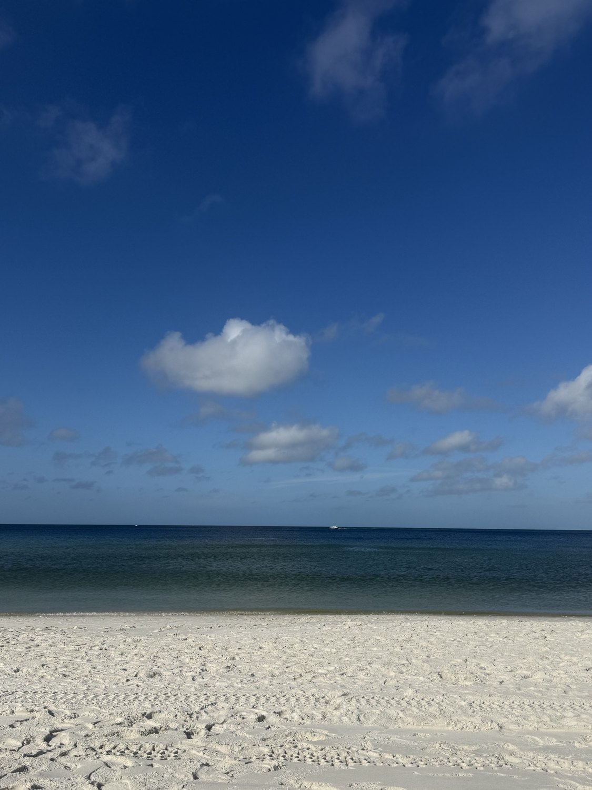
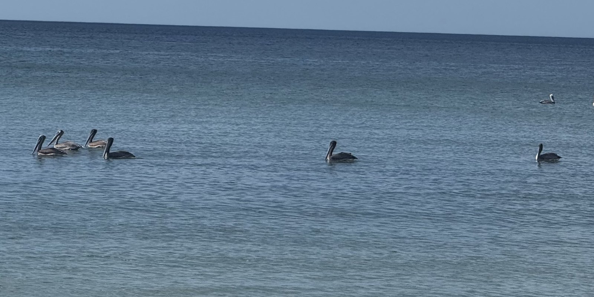

She’s the Goose
Autumn Letters · No. 18

By the end of October, Connecticut was starting to turn cold. The mornings were chilly, the days were getting shorter, and I wasn’t quite ready to give up on warm weather.
So when we had the chance to spend a few days in Naples, Florida, I didn’t need to be asked twice.
Rob had work to do while we were there, so I had the days to myself. I spent most of them on the beach enjoying Ann Patchett’s Whistler, soaking up the sunshine, and doing very little else.
I can’t remember the last time I was happy to sit in one place for hours. Even when I have nothing pressing, I can usually come up with a dozen things I ought to be doing. But with a book in my lap and the Gulf in front of me, I wasn’t thinking about any of them.
The pelicans were the best part. They floated just offshore in a loose little group, riding the water together, and every so often I put my book down to watch them.

In the evenings, Rob was done with work and the time was ours. He’d had beautiful flowers sent to the room, which made coming back from the beach even better. We went out to dinner, enjoyed the warm nights, and talked about whatever came to mind.
There was no sightseeing and no schedule, and I didn’t miss either one.
I love our life in Connecticut, especially in the fall. But I have to admit, there’s something awfully nice about leaving the cold behind for a few days and feeling the sun on my face at the end of October.
We came home to the same chilly mornings we’d left behind. I could have stayed on that beach a little longer.
“He maketh me to lie down in green pastures: he leadeth me beside the still waters.”
Psalm 23:2 (KJV)
Until next week,
Jessica
Letters from She’s the Goose
No noise, no selling — just the same quiet, delivered when it’s written.
Thank you — look for a note to confirm.